The Inflammasome — Two Signals Againاینفلاماسوم — باز هم دو سیگنال
The most powerful inflammatory cytokine you make cannot get out of the cell that makes it, and is inactive even if it does. That is not a design flaw — it is a second safety catch on a molecule dangerous enough to cause shock. The machine that releases it is the inflammasome, and it works on exactly the logic you already know from Part 2: one signal to prepare, a second to commit.قدرتمندترین سایتوکاین التهابیای که میسازید نمیتواند از سلول سازندهاش بیرون بیاید، و اگر هم بیاید غیرفعال است. این نقص طراحی نیست — ضامن ایمنی دوم است روی مولکولی که آنقدر خطرناک است که میتواند شوک بسازد. ماشینی که آزادش میکند اینفلاماسوم است و دقیقاً با منطقی کار میکند که از بخش ۲ میشناسید: یک سیگنال برای آمادهسازی، دومی برای تعهد.
By the end of this Part you should be able toدر پایان این بخش باید بتوانید
Explain why IL-1β needs a mechanism no other cytokine needs.توضیح دهید چرا IL-1β به سازوکاری نیاز دارد که هیچ سایتوکاین دیگری ندارد.
Name what signal 1 and signal 2 each produce in the inflammasome pathway.بگویید سیگنال ۱ و سیگنال ۲ در مسیر اینفلاماسوم هر یک چه میسازند.
Name the three components of the NLRP3 inflammasome and the domain each contributes.سه جزء اینفلاماسوم NLRP3 و دومینی را که هر یک میآورد نام ببرید.
Give six chemically unrelated NLRP3 activators and the one event most of them share.شش فعالکنندهٔ NLRP3 که شیمیایی بیارتباطاند و رویداد مشترک بیشترشان را بگویید.
Distinguish the canonical from the non-canonical pathway, and say which caspases are human.مسیر کانونی را از غیرکانونی تمیز دهید و بگویید کدام کاسپازها انسانیاند.
Explain how IL-1β physically leaves the cell.توضیح دهید IL-1β فیزیکی چگونه از سلول بیرون میرود.
7.1The Problem: IL-1β Has No Signal Peptideمسئله: IL-1β پپتید سیگنال ندارد
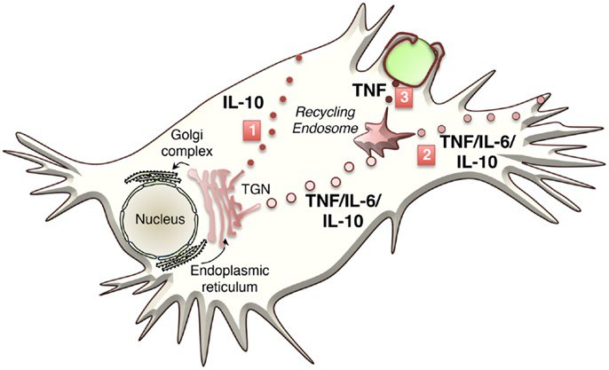
Fig 7.1 How ordinary cytokines leave. Anything with a signal peptide enters the endoplasmic reticulum, passes through the Golgi and is released by one of three routes: direct from the trans-Golgi network (IL-10), via the recycling endosome (TNF, IL-6, IL-10), or routed to the phagocytic cup during phagocytosis (TNF) so that it is delivered exactly where the microbe is.سایتوکاینهای معمولی چگونه بیرون میروند. هر چه پپتید سیگنال دارد وارد شبکهٔ آندوپلاسمی میشود، از گلژی میگذرد و از یکی از سه راه آزاد میشود: مستقیم از شبکهٔ ترانسگلژی (IL-10)، از راه اندوزوم بازیافتی (TNF، IL-6، IL-10)، یا هدایتشده به جام فاگوسیتی حین فاگوسیتوز (TNF) تا دقیقاً همانجا که میکروب است تحویل داده شود.
Every protein destined for secretion carries an N-terminal signal peptide that directs it into the endoplasmic reticulum. The IL-1 superfamily does not have one. It is made on free ribosomes in the cytosol and stays there.هر پروتئینی که برای ترشح ساخته میشود، پپتید سیگنالی در انتهای N دارد که آن را به شبکهٔ آندوپلاسمی هدایت میکند. اَبَرخانوادهٔ IL-1 چنین چیزی ندارد. روی ریبوزومهای آزاد در سیتوزول ساخته میشود و همانجا میماند.
There is a second problem on top of the first. It is made as pro-IL-1β, a 31 kDa precursor that is biologically inactive. Even if it escaped, it would do nothing. So a cell that has detected a pathogen and switched on NF-κB ends up holding a stockpile of an inert cytokine it cannot release — and that is exactly the state the system intends.مشکل دومی هم روی اولی هست. بهشکل پیشسازِ IL-1β ساخته میشود، پیشسازی ۳۱ کیلودالتونی که از نظر زیستی غیرفعال است. حتی اگر فرار میکرد، هیچ نمیکرد. پس سلولی که پاتوژنی را تشخیص داده و NF-κB را روشن کرده، در نهایت انباری از سایتوکاینی بیاثر در دست دارد که نمیتواند آزادش کند — و دقیقاً همان حالتی است که سامانه میخواهد.
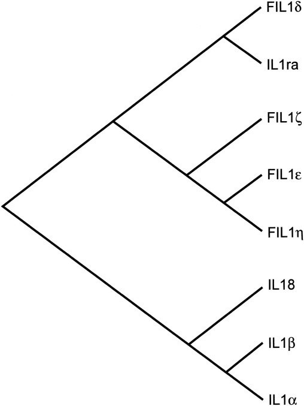
Fig 7.2 The IL-1 superfamily by sequence relatedness: three subfamilies — the IL-1 family (IL-1α, IL-1β, IL-1ra), the IL-18 family and the IL-33 family — with more than ten members in all. Note IL-1ra on the tree: a naturally occurring receptor antagonist, a member of the family whose job is to block it. That molecule became the drug anakinra (§8.4).اَبَرخانوادهٔ IL-1 بر پایهٔ خویشاوندی توالی: سه زیرخانواده — خانوادهٔ IL-1 (IL-1α، IL-1β، IL-1ra)، خانوادهٔ IL-18 و خانوادهٔ IL-33 — در مجموع با بیش از ده عضو. به IL-1ra روی درخت توجه کنید: آنتاگونیستی طبیعی برای گیرنده، عضوی از خانواده که کارش مسدودکردن همان خانواده است. آن مولکول به داروی آناکینرا بدل شد (بخش ۸.۴).
7.2Signal 1 and Signal 2, Againسیگنال ۱ و سیگنال ۲، دوباره
Signal 1 — primingWrite the partsقطعات را بنویس
A PRR — a TLR seeing LPS, or TNFR, or IL-1R — activates NF-κB, which transcribes pro-IL-1β, pro-IL-18 and NLRP3 itself. Nothing is released. The cell is now primed and nothing more.یک گیرندهٔ شناساگر الگو — TLRی که LPS میبیند، یا TNFR، یا گیرندهٔ IL-1 — NF-κB را فعال میکند که پیشساز IL-1β، پیشساز IL-18 و خودِ NLRP3 را رونویسی میکند. چیزی آزاد نمیشود. سلول اکنون فقط آمادهسازیشده است.
Signal 2 — activationAssemble and cutمونتاژ کن و ببر
A second, independent stimulus — ATP, a pore-forming toxin, a crystal — triggers assembly of the inflammasome. Caspase-1 is activated, pro-IL-1β is cleaved to its mature 17 kDa form, and GSDMD opens the door.محرکی دوم و مستقل — ATP، سم منفذساز، کریستال — مونتاژ اینفلاماسوم را میاندازد. کاسپاز ۱ فعال میشود، پیشساز IL-1β به شکل بالغ ۱۷ کیلودالتونی بریده میشود و GSDMD در را باز میکند.
Why twoThe same reason as anergyهمان دلیل آنرژی
Mature IL-1β causes fever, hypotension and, in quantity, shock. A cell must not be able to release it on the strength of a single, possibly mistaken, signal. Requiring two independent inputs makes an accident improbable.IL-1β بالغ تب، افت فشار و به مقدار زیاد شوک میسازد. سلول نباید بتواند آن را با تکیه بر یک سیگنالِ شاید اشتباه آزاد کند. نیاز به دو ورودی مستقل، احتمال حادثه را ناچیز میکند.
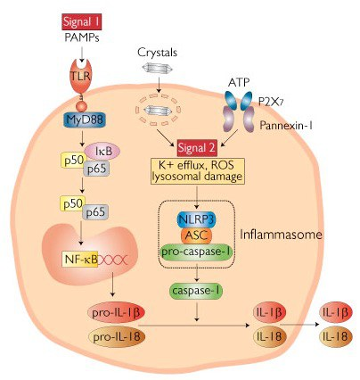
Fig 7.3 The two signals in one cell. Signal 1 (left, red label): PAMPs engage a TLR → MyD88 → IκB degraded → p50/p65 NF-κB into the nucleus → transcription of pro-IL-1β and pro-IL-18. Signal 2 (right, red label): crystals, or ATP acting on P2X₇ and pannexin-1, cause K⁺ efflux, ROS and lysosomal damage → the NLRP3 / ASC / pro-caspase-1 complex assembles → caspase-1 cleaves the pro-forms → mature IL-1β and IL-18 leave the cell.دو سیگنال در یک سلول. سیگنال ۱ (چپ، برچسب قرمز):PAMPها TLR را درگیر میکنند ← MyD88 ← تجزیهٔ IκB ← p50/p65NF-κB به هسته ← رونویسی پیشساز IL-1β و پیشساز IL-18. سیگنال ۲ (راست، برچسب قرمز): کریستالها، یا ATP که روی P2X₇ و پانکسین-۱ اثر میکند، خروج پتاسیم، ROS و آسیب لیزوزومی میسازند ← کمپلکس NLRP3 / ASC / پیشکاسپاز ۱ مونتاژ میشود ← کاسپاز ۱ پیشسازها را میبرد ← IL-1β و IL-18 بالغ سلول را ترک میکنند.
The parallel you should say out loudموازیای که باید بلند بگویید
Put the two systems side by side and they are the same design:دو سامانه را کنار هم بگذارید، یک طرحاند:
T cell: signal 1 = TCR sees peptide–MHC (specific). Signal 2 = CD28 sees B7 (permission). One alone → anergy.سلول T: سیگنال ۱ = TCR پپتید–MHC را میبیند (اختصاصی). سیگنال ۲ = CD28B7 را میبیند (اجازه). یکی بهتنهایی ← آنرژی.
Macrophage: signal 1 = PRR sees PAMP (specific). Signal 2 = a danger event — ATP, crystal, toxin (permission). One alone → a primed cell that releases nothing.ماکروفاژ: سیگنال ۱ = گیرندهٔ شناساگر الگو PAMP را میبیند (اختصاصی). سیگنال ۲ = رویدادی خطرناک — ATP، کریستال، سم (اجازه). یکی بهتنهایی ← سلولی آمادهشده که چیزی آزاد نمیکند.
In both cases the first signal says “something is here” and the second says “and it is actually dangerous”. In both cases the irreversible, expensive, potentially self-destructive response is withheld until both have arrived. This is not a coincidence of teaching; it is how the immune system avoids being its own worst enemy.در هر دو مورد، سیگنال نخست میگوید «چیزی اینجاست» و دومی میگوید «و واقعاً خطرناک است». در هر دو مورد، پاسخ برگشتناپذیر، پرهزینه و بالقوه خودویرانگر تا رسیدن هر دو نگه داشته میشود. این تصادف آموزشی نیست؛ راهی است که سامانهٔ ایمنی با آن از بدترین دشمن خود شدن پرهیز میکند.
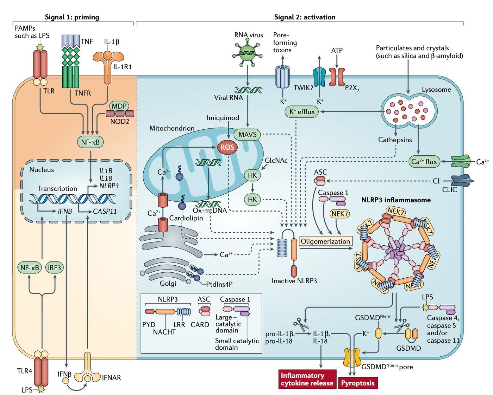
Fig 7.4 The same two signals at research resolution. Left half — signal 1, priming: LPS, TNF or IL-1β → NF-κB → transcription of IL1B, IL18 and NLRP3. Right half — signal 2, activation: RNA virus, pore-forming toxins, ATP via P2X₇, and particulates such as silica and β-amyloid, converging on K⁺ efflux, mitochondrial ROS, oxidised mitochondrial DNA, cardiolipin and lysosomal cathepsins → NLRP3 oligomerisation → caspase-1 → inflammatory cytokine release and pyroptosis through the GSDMD pore.همان دو سیگنال با تفکیک پژوهشی. نیمهٔ چپ — سیگنال ۱، آمادهسازی:LPS، TNF یا IL-1β ← NF-κB ← رونویسی IL1B، IL18 و NLRP3. نیمهٔ راست — سیگنال ۲، فعالسازی: ویروس RNAدار، سمهای منفذساز، ATP از راه P2X₇، و ذرات مانند سیلیس و بتا-آمیلوئید، که همه به خروج پتاسیم، ROS میتوکندریایی، DNA میتوکندریاییِ اکسیدشده، کاردیولیپین و کاتپسینهای لیزوزومی میرسند ← الیگومریزاسیون NLRP3 ← کاسپاز ۱ ← آزادشدن سایتوکاین التهابی و پیروپتوز از راه منفذ GSDMD.
The inflammasome is a multiprotein oligomer responsible for the activation of inflammatory responses. The consequence of its assembly is caspase-1 activation, by auto-processing. Active caspase-1 then drives the maturation and secretion of IL-1β and IL-18.اینفلاماسوم یک الیگومر چندپروتئینی است که مسئول فعالسازی پاسخهای التهابی است. پیامد مونتاژش، فعالشدن کاسپاز ۱ بهصورت خودپردازشی است. سپس کاسپاز ۱ فعال، بلوغ و ترشح IL-1β و IL-18 را میراند.
The sensor — NLRP3. Domains: LRR (leucine-rich repeat, the sensing end), NACHT/NBD (the nucleotide-binding domain that drives oligomerisation) and PYD (pyrin domain, which recruits ASC).حسگر — NLRP3. دومینها: LRR (تکرار غنی از لوسین، سرِ حسکننده)، NACHT/NBD (دومین متصلشونده به نوکلئوتید که الیگومریزاسیون را میراند) و PYD (دومین پایرین که ASC را فرا میخواند).
The adaptor — ASC. Two domains and nothing else: a PYD that binds NLRP3's PYD, and a CARD that binds caspase-1's CARD. It is a pure connector.آداپتور — ASC. دو دومین و بس: یک PYD که به PYDNLRP3 میچسبد و یک CARD که به CARD کاسپاز ۱ میچسبد. صرفاً یک رابط است.
The executioner — pro-caspase-1. A CARD plus the catalytic subunits p20 and p10.جلاد — پیشکاسپاز ۱. یک CARD بهعلاوهٔ زیرواحدهای کاتالیتیک p20 و p10.
How it switches onچگونه روشن میشود
NLRP3 oligomerises; its PYDs nucleate an ASC filament; the ASC CARDs in turn nucleate caspase-1 filaments.The consequence is proximity-induced activation. Pro-caspase-1 has weak intrinsic activity; forced into a dense filament, the molecules cleave each other. This is why the lecture says caspase-1 is activated “by auto-processing”, and why the whole thing is called a signalling by polymerisation mechanism — the complex is not a switch, it is a nucleation seed.NLRP3 الیگومریزه میشود؛ PYDهایش یک رشتهٔ ASC را هستهگذاری میکنند؛ CARDهای ASC نیز بهنوبت رشتههای کاسپاز ۱ را هستهگذاری میکنند.پیامدش فعالسازی ناشی از مجاورت است. پیشکاسپاز ۱ فعالیت ذاتی ضعیفی دارد؛ وقتی بهزور در رشتهای متراکم قرار گیرد، مولکولها یکدیگر را میبرند. به همین سبب درس میگوید کاسپاز ۱ «با خودپردازشی» فعال میشود، و به همین سبب کل ماجرا سازوکار پیامرسانی با پلیمریزاسیون نامیده میشود — کمپلکس یک کلید نیست، بذر هستهگذاری است.
What you see down a microscopeزیر میکروسکوپ چه میبینید
A single, large, perinuclear ASC speck — one per cell. Its appearance is the visual readout that the inflammasome has fired, and it is used as an assay.یک اسپِکِ ASC بزرگ و اطرافهستهای — یکی در هر سلول. پدیدارشدنش، خوانش دیداریِ شلیک اینفلاماسوم است و بهعنوان آزمون بهکار میرود.
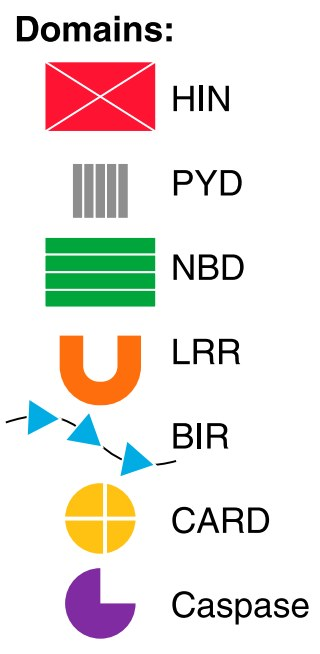
Fig 7.5 The domain alphabet. HIN (DNA-binding), PYD (pyrin), NBD (nucleotide-binding), LRR (leucine-rich repeat), BIR, CARD (caspase recruitment) and the caspase domain itself. Every inflammasome in the next figure is a different arrangement of these seven pieces.الفبای دومینها. HIN (متصل به DNA)، PYD (پایرین)، NBD (متصل به نوکلئوتید)، LRR (تکرار غنی از لوسین)، BIR، CARD (فراخوانی کاسپاز) و خودِ دومین کاسپاز. هر اینفلاماسوم در شکل بعد، آرایش متفاوتی از همین هفت قطعه است.
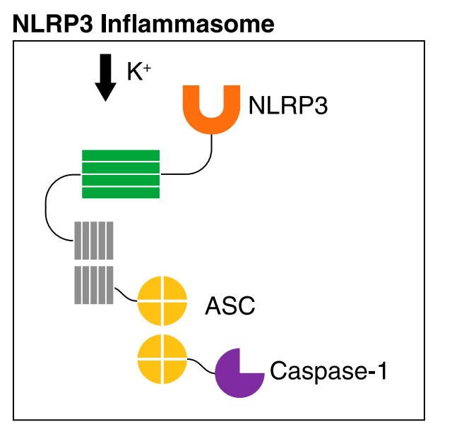
Fig 7.6NLRP3 — activated by K⁺ efflux among many things. Sensor (PYD-NBD-LRR) → ASC (PYD-CARD) → caspase-1. The three-layer arrangement to learn.NLRP3 — که از جمله با خروج پتاسیم فعال میشود. حسگر (PYD-NBD-LRR) ← ASC (PYD-CARD) ← کاسپاز ۱. همان آرایش سهلایهای که باید بیاموزید.
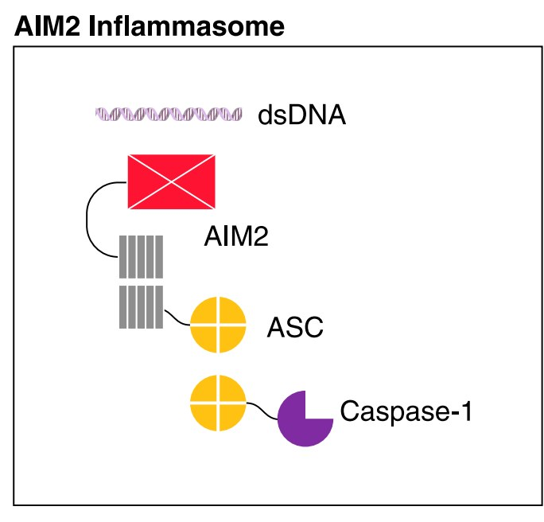
Fig 7.7AIM2 — the same architecture with a different sensor. Its HIN domain binds cytosolic double-stranded DNA directly, so AIM2 is the inflammasome for DNA viruses and for intracellular bacteria that leak DNA into the cytosol.AIM2 — همان معماری با حسگری متفاوت. دومین HINش مستقیماً به DNA دورشتهای سیتوزولی میچسبد، پس AIM2 اینفلاماسومِ ویروسهای DNAدار و باکتریهای درونسلولیای است که DNA به سیتوزول نشت میدهند.
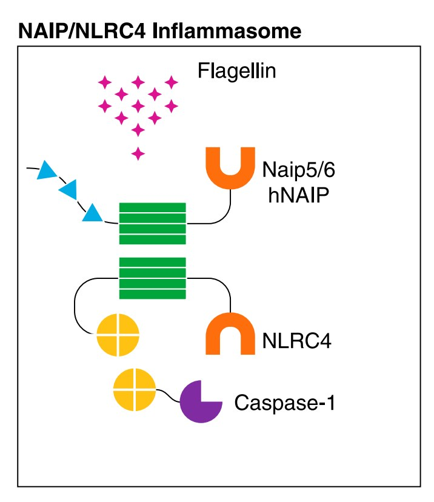
Fig 7.8NAIP/NLRC4 — the inflammasome for cytosolic flagellin and bacterial type-III secretion-system components. Note the logic: TLR5 detects flagellin outside the cell, NAIP detects it inside. Outside means “a bacterium is nearby”; inside means “a bacterium is injecting things into me”, which is a far more urgent message.NAIP/NLRC4 — اینفلاماسومِ فلاژلین سیتوزولی و اجزای سامانهٔ ترشحی نوع III باکتری. به منطقش توجه کنید: TLR5 فلاژلین را بیرون سلول تشخیص میدهد، NAIP آن را درون سلول. بیرون یعنی «باکتریای نزدیک است»؛ درون یعنی «باکتریای دارد چیزهایی به من تزریق میکند»، که پیامی بهمراتب فوریتر است.
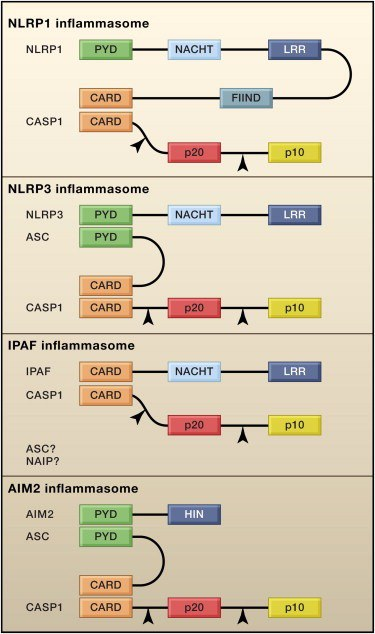
Fig 7.9 Four inflammasomes as domain diagrams. NLRP1 and IPAF/NLRC4 have their own CARD and can engage caspase-1 without ASC; NLRP3 and AIM2 have only a PYD and therefore must use ASC as the adaptor. This is the single structural fact that predicts which sensors need ASC.چهار اینفلاماسوم بهشکل نمودار دومین. NLRP1 و IPAF/NLRC4CARD خودشان را دارند و میتوانند بدون ASC کاسپاز ۱ را درگیر کنند؛ NLRP3 و AIM2 فقط PYD دارند و بنابراین ناگزیرندASC را بهعنوان آداپتور بهکار برند. این تنها واقعیت ساختاری است که پیشبینی میکند کدام حسگرها به ASC نیاز دارند.
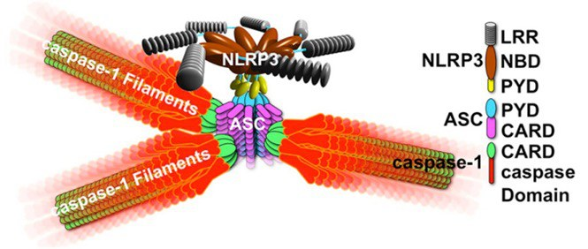
Fig 7.10 The structural model: NLRP3 nucleates ASC filaments, which nucleate caspase-1 filaments. A star-shaped polymer, not a tidy stoichiometric complex — which is how a handful of sensor molecules activate thousands of caspase molecules.مدل ساختاری: NLRP3 رشتههای ASC را هستهگذاری میکند که رشتههای کاسپاز ۱ را هستهگذاری میکنند. پلیمری ستارهای، نه کمپلکسی مرتب با نسبت ثابت — و اینگونه است که مشتی مولکول حسگر، هزاران مولکول کاسپاز را فعال میکنند.
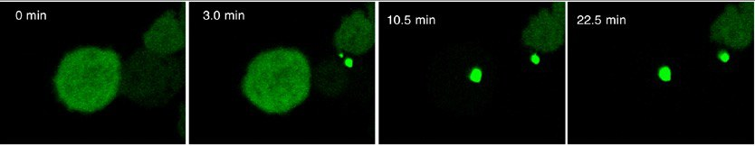
Fig 7.11 The same event in a living cell, four frames over 22 minutes. Diffuse green ASC in the cytoplasm suddenly condenses into one bright speck. Inflammasome activation is not gradual — it is a phase transition, all-or-none, per cell.همان رویداد در سلول زنده، چهار فریم طی ۲۲ دقیقه. ASC سبزِ پخششده در سیتوپلاسم ناگهان در یک اسپِک درخشان متراکم میشود. فعالسازی اینفلاماسوم تدریجی نیست — یک گذار فاز است، همهیاهیچ، در هر سلول.
Caspase-1: the executionerکاسپاز ۱: جلاد
Table 7.1 The caspases you need to separateجدول ۷.۱ — کاسپازهایی که باید از هم جدا کنید
Groupگروه
Membersاعضا
What they doچه میکنند
Inflammatory caspasesکاسپازهای التهابی
Caspase-1, 4, 5 (human) Caspase-1, 11 (mouse)کاسپازهای ۱، ۴، ۵ (انسان) کاسپازهای ۱ و ۱۱ (موش)
Cleave pro-IL-1β and pro-IL-18 to the mature cytokines, and cleave gasdermin Dپیشساز IL-1β و پیشساز IL-18 را به سایتوکاین بالغ میبرند، و گاسدرمین D را هم میبرند
Mediate cell death — quiet, non-inflammatory, membrane-intact apoptosisواسطهٔ مرگ سلولیاند — آپوپتوز خاموش، غیرالتهابی و با غشای سالم
Exam Trap — caspase-11 is a mouse geneدام امتحانی — کاسپاز ۱۱ ژنی موشی است
The literature on the non-canonical inflammasome is almost all mouse work, so caspase-11 appears everywhere. Humans do not have caspase-11. Its functional equivalents are caspase-4 and caspase-5. If a question names caspase-11, it is describing a mouse experiment; if it asks what senses intracellular LPS in a human cell, the answer is caspase-4 and caspase-5.ادبیات اینفلاماسوم غیرکانونی تقریباً همه کار موشی است، پس کاسپاز ۱۱ همهجا ظاهر میشود. انسان کاسپاز ۱۱ ندارد. معادلهای کارکردیاش کاسپاز ۴ و کاسپاز ۵ هستند. اگر سؤالی کاسپاز ۱۱ را نام ببرد، آزمایشی موشی را توصیف میکند؛ اگر بپرسد چه چیزی LPS درونسلولی را در سلول انسانی حس میکند، پاسخ کاسپاز ۴ و کاسپاز ۵ است.
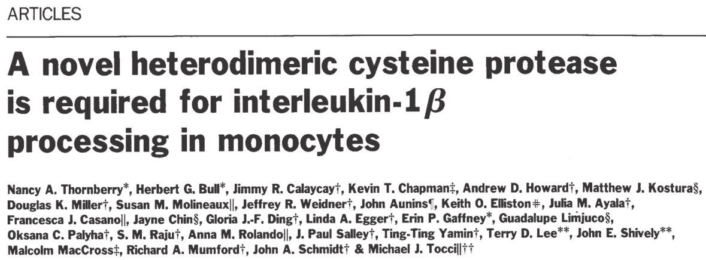
Fig 7.12 The 1992 Nature paper. The title is the whole discovery: “A novel heterodimeric cysteine protease is required for interleukin-1β processing in monocytes.” The enzyme was named interleukin-1β converting enzyme (ICE) and later renamed caspase-1.مقالهٔ نیچر ۱۹۹۲. عنوان، تمام کشف است: «یک سیستئینپروتئاز هتـرودایمری تازه برای پردازش اینترلوکین ۱ بتا در مونوسیتها لازم است.» آنزیم را آنزیم تبدیلکنندهٔ اینترلوکین ۱ بتا (ICE) نامیدند و بعدها کاسپاز ۱ نامش دادند.
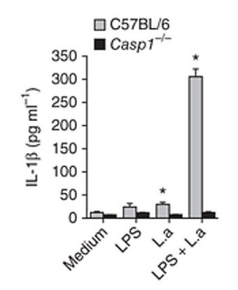
Fig 7.13 The proof, in one bar chart. Wild-type cells (grey) release a great deal of IL-1β when given LPS plus a second stimulus; Casp1⁻/⁻ cells (black) release essentially none under any condition. Note also that LPS alone gives almost nothing even in wild-type — that is signal 1 without signal 2.مدرک، در یک نمودار میلهای. سلولهای وحشیتیپ (خاکستری) وقتی LPS بهعلاوهٔ محرک دوم میگیرند مقدار زیادی IL-1β آزاد میکنند؛ سلولهای فاقد کاسپاز ۱ (سیاه) در هیچ شرایطی عملاً هیچ. همچنین توجه کنید LPSبهتنهایی حتی در وحشیتیپ تقریباً هیچ نمیدهد — این سیگنال ۱ بدون سیگنال ۲ است.Fig 7.14Jürg Tschopp (1951–2011), whose group at Lausanne — with Fabio Martinon and Kimberly Burns — described and named the inflammasome in 2002.یورگ چوپ (۱۹۵۱–۲۰۱۱)، که گروهش در لوزان — با فابیو مارتینون و کیمبرلی برنز — اینفلاماسوم را در ۲۰۰۲ توصیف و نامگذاری کرد.
7.4What Activates NLRP3چه چیزی NLRP3 را فعال میکند
Table 7.2 NLRP3 activators — and what each one means clinicallyجدول ۷.۲ — فعالکنندههای NLRP3 — و معنای بالینی هر یک
Activatorفعالکننده
Where you meet itکجا با آن روبهرو میشوید
ATPATP
Released by dying cells; acts on the P2X₇ receptor. The canonical laboratory signal 2, and a genuine DAMP in any tissue injuryاز سلولهای در حال مرگ آزاد میشود؛ روی گیرندهٔ P2X₇ اثر میکند. سیگنال ۲ کلاسیک آزمایشگاهی، و یک DAMP واقعی در هر آسیب بافتی
Pore-forming toxinsسمهای منفذساز
Nigericin (experimental), and bacterial toxins such as streptolysin and α-haemolysinنایجریسین (آزمایشگاهی)، و سمهای باکتریایی مانند استرپتولیزین و آلفا-همولیزین
Alumآلوم
The adjuvant in many vaccines. This is how alum works — an answer that was unknown for seventy yearsادجوانت بسیاری از واکسنها. آلوم اینگونه کار میکند — پاسخی که هفتاد سال ناشناخته بود
MSU — monosodium urateمونوسدیم اورات
Gout. The crystal is phagocytosed, ruptures the lysosome, and the resulting IL-1β is the pain and swelling of an acute attackنقرس. کریستال فاگوسیتوز میشود، لیزوزوم را پاره میکند و IL-1β حاصل، همان درد و تورم حملهٔ حاد است
Cholesterol crystals, oxLDLکریستال کلسترول، oxLDL
Atherosclerosis. The plaque macrophage is running an inflammasomeآترواسکلروز. ماکروفاژ پلاک، یک اینفلاماسوم روشن دارد
Type 2 diabetes and metabolic syndrome — the molecular link between obesity and chronic low-grade inflammationدیابت نوع ۲ و سندرم متابولیک — پیوند مولکولی چاقی و التهاب مزمن خفیف
Islet amyloid polypeptideپلیپپتید آمیلوئید جزایر
Deposited in the pancreatic islet in type 2 diabetes; also β-amyloid in Alzheimer's diseaseدر جزایر پانکراس در دیابت نوع ۲ رسوب میکند؛ همچنین بتا-آمیلوئید در آلزایمر
Silica, asbestosسیلیس، آزبست
Silicosis and asbestosis — inhaled particles that a macrophage cannot digestسیلیکوز و آزبستوز — ذرات استنشاقی که ماکروفاژ نمیتواند هضمشان کند
Look at that list. ATP, a crystal of uric acid, a fatty acid, a bacterial toxin and a mineral fibre have nothing chemically in common, and no single binding site could accommodate them all. NLRP3 therefore does not sense them directly. It senses a cellular consequence they all produce.به آن فهرست نگاه کنید. ATP، کریستال اوریک اسید، یک اسید چرب، یک سم باکتریایی و یک الیاف معدنی هیچ وجه شیمیایی مشترکی ندارند و هیچ جایگاه اتصال واحدی نمیتواند همهشان را جا دهد. پس NLRP3 آنها را مستقیماً حس نمیکند. یک پیامد سلولی را حس میکند که همهشان میسازند.
The dominant one is potassium efflux. A drop in intracellular K⁺ is the common denominator of pore formation, P2X₇ opening and membrane damage — and it is sufficient on its own to trigger NLRP3. There are also K⁺-efflux-independent routes: lysosomal rupture releasing cathepsin B (the crystal route), mitochondrial ROS and oxidised mitochondrial DNA, Ca²⁺ influx, and NEK7, a kinase that binds NLRP3 and licenses its oligomerisation.غالبترینشان خروج پتاسیم است. افت پتاسیم درونسلولی، مخرج مشترک منفذسازی، بازشدن P2X₇ و آسیب غشاست — و بهتنهایی برای انداختن NLRP3 کافی است. مسیرهای مستقل از خروج پتاسیم هم هستند: پارگی لیزوزوم که کاتپسین B آزاد میکند (مسیر کریستال)، ROS میتوکندریایی و DNA میتوکندریاییِ اکسیدشده، ورود کلسیم، و NEK7 که کینازی است و با چسبیدن به NLRP3 اجازهٔ الیگومریزاسیونش را میدهد.
The design principle: NLRP3 is not a receptor for a molecule; it is a detector of cellular distress. That is why it appears in so many diseases that have nothing to do with infection.اصل طراحی:NLRP3 گیرندهٔ یک مولکول نیست؛ آشکارساز پریشانی سلولی است. به همین سبب در بیماریهای بسیاری ظاهر میشود که هیچ ربطی به عفونت ندارند.
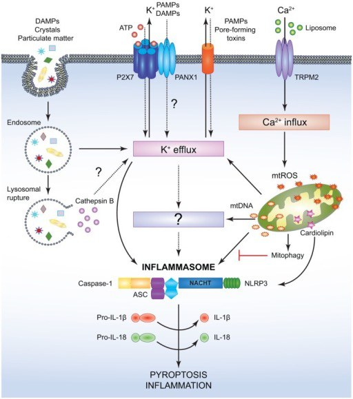
Fig 7.15 Everything converging on one box. DAMPs, crystals, particulates, ATP through P2X₇ and pannexin-1, pore-forming toxins, liposomes and TRPM2-mediated Ca²⁺ influx all funnel into K⁺ efflux; lysosomal rupture supplies cathepsin B; damaged mitochondria supply mtROS, mtDNA and cardiolipin. Output: caspase-1, IL-1β, IL-18 and pyroptosis. Note mitophagy at the right, inhibiting the pathway by clearing the damaged mitochondria.همهچیز به یک جعبه میرسد. DAMPها، کریستالها، ذرات، ATP از راه P2X₇ و پانکسین-۱، سمهای منفذساز، لیپوزومها و ورود کلسیم با واسطهٔ TRPM2 همه به خروج پتاسیم میریزند؛ پارگی لیزوزوم کاتپسین B میدهد؛ میتوکندری آسیبدیده ROS و DNA میتوکندریایی و کاردیولیپین میدهد. خروجی: کاسپاز ۱، IL-1β، IL-18 و پیروپتوز. به میتوفاژی در سمت راست توجه کنید که با پاککردن میتوکندری آسیبدیده مسیر را مهار میکند.
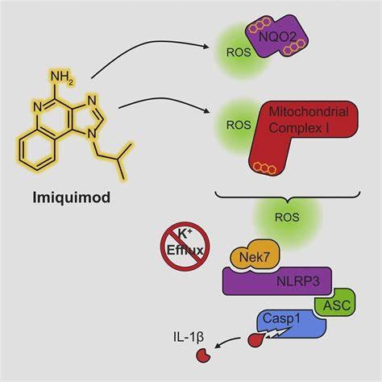
Fig 7.16 A worked example of a K⁺-efflux-independent activator. Imiquimod inhibits NQO2 and mitochondrial complex I, generating ROS, which licenses the NEK7–NLRP3 interaction and assembles the complex with a crossed-out K⁺ efflux. Imiquimod is a real drug — a topical treatment for genital warts and basal cell carcinoma — and this is part of how it works.مثالی حلشده از فعالکنندهٔ مستقل از خروج پتاسیم. ایمیکوئیمودNQO2 و کمپلکس I میتوکندریایی را مهار میکند و ROS میسازد که برهمکنش NEK7–NLRP3 را مجاز میکند و کمپلکس را با خروج پتاسیمِ خطخورده مونتاژ میکند. ایمیکوئیمود دارویی واقعی است — درمان موضعی زگیل تناسلی و کارسینوم سلول بازال — و بخشی از سازوکارش همین است.
7.5The Non-canonical Route: Caspase-11, 4 and 5مسیر غیرکانونی: کاسپازهای ۱۱، ۴ و ۵
The lecturer asks: what happens when cells are infected with intracellular bacteria? TLR4 is on the cell surface and in endosomes. A bacterium that has escaped into the cytosol is carrying LPS on the wrong side of every membrane TLR4 can see.مدرّس میپرسد: وقتی سلولها به باکتری درونسلولی آلوده شوند چه میشود؟TLR4 روی سطح سلول و در اندوزوم است. باکتریای که به سیتوزول گریخته، LPS را در سمت اشتباهِ هر غشایی که TLR4 میتواند ببیند حمل میکند.
Table 7.3 Canonical versus non-canonicalجدول ۷.۳ — کانونی در برابر غیرکانونی
Canonical NLRP3NLRP3 کانونی
Non-canonicalغیرکانونی
Triggerمحرک
PAMPs and DAMPs — the Table 7.2 listPAMP و DAMP — فهرست جدول ۷.۲
LPS free in the cytosol, from Gram-negative bacteria that have escaped the vacuoleLPS آزاد در سیتوزول، از باکتریهای گرممنفیای که از واکوئل گریختهاند
Sensorحسگر
NLRP3 + NEK7, then ASCNLRP3 + NEK7، سپس ASC
The caspase itself. Pro-caspase-11 (mouse) or pro-caspase-4/5 (human) binds LPS directly through its CARD — no separate receptor at allخودِ کاسپاز. پیشکاسپاز ۱۱ (موش) یا ۴/۵ (انسان) از راه CARDش مستقیماً به LPS میچسبد — اصلاً گیرندهٔ جداگانهای نیست
Caspaseکاسپاز
Caspase-1کاسپاز ۱
Caspase-11 (mouse) · Caspase-4, -5 (human)کاسپاز ۱۱ (موش) · کاسپازهای ۴ و ۵ (انسان)
Direct productsفرآوردههای مستقیم
IL-1β, IL-18 and cleaved GSDMDIL-1β، IL-18 و GSDMD بریدهشده
Cleaved GSDMD only. These caspases cannot process pro-IL-1βفقط GSDMD بریدهشده. این کاسپازها نمیتوانند پیشساز IL-1β را پردازش کنند
How IL-1β still gets madeپس IL-1β چگونه ساخته میشود
Directlyمستقیم
Indirectly. GSDMD pores cause K⁺ efflux, which activates NLRP3 and caspase-1 in the same cell. The non-canonical pathway switches the canonical one onغیرمستقیم. منفذهای GSDMDخروج پتاسیم میسازند که NLRP3 و کاسپاز ۱ را در همان سلول فعال میکند. مسیر غیرکانونی، کانونی را روشن میکند
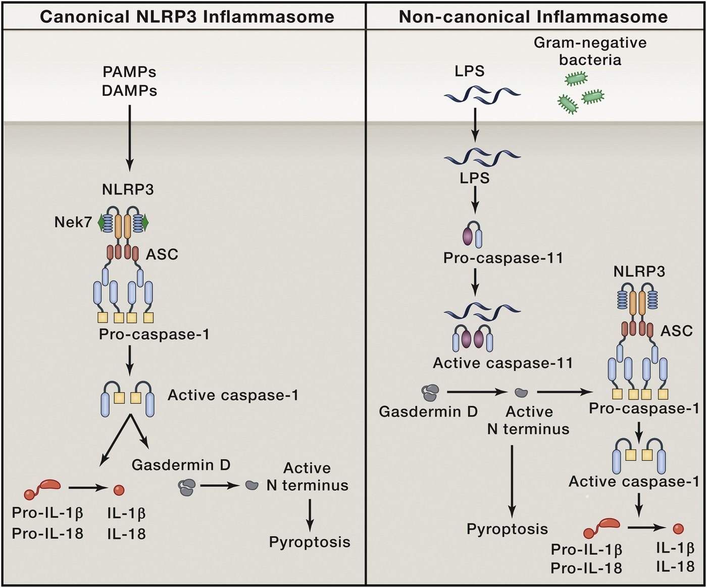
Fig 7.17 The two pathways side by side. Left, canonical: PAMPs/DAMPs → NLRP3 with Nek7 and ASC → caspase-1 → both gasdermin D and the cytokines. Right, non-canonical: cytosolic LPS → pro-caspase-11 directly → gasdermin D → pyroptosis, and — via the resulting membrane damage — NLRP3, caspase-1 and the cytokines after all. Follow the arrow that loops back: the two pathways are not alternatives, they are in series.دو مسیر کنار هم. چپ، کانونی:PAMP/DAMP ← NLRP3 با Nek7 و ASC ← کاسپاز ۱ ← هم گاسدرمین D هم سایتوکاینها. راست، غیرکانونی:LPS سیتوزولی ← مستقیماً پیشکاسپاز ۱۱ ← گاسدرمین D ← پیروپتوز، و — از راه آسیب غشاییِ حاصل — NLRP3، کاسپاز ۱ و در نهایت سایتوکاینها. پیکانی را که برمیگردد دنبال کنید: دو مسیر جایگزین هم نیستند، پشت سر هماند.
7.6Gasdermin D, the Pore and Pyroptosisگاسدرمین D، منفذ و پیروپتوز
Mechanism — how IL-1β actually leaves the cellمکانیسم — IL-1β واقعاً چگونه از سلول بیرون میرود
Gasdermin D sits inert in the cytosol, its pore-forming N-terminal domain held shut by an autoinhibitory C-terminal domain.گاسدرمین D بیاثر در سیتوزول مینشیند، و دومین منفذسازِ انتهای Nش را دومین خودمهارکنندهٔ انتهای C بسته نگه داشته.
An inflammatory caspase cuts between the two domains, releasing the N-terminal fragment.Note which enzymes can do this: caspase-1, 4, 5 and 11. The apoptotic caspases cannot — which is precisely why apoptosis is silent and pyroptosis is not.کاسپاز التهابی میان دو دومین را میبُرد و قطعهٔ انتهای N را آزاد میکند.توجه کنید کدام آنزیمها میتوانند: کاسپازهای ۱، ۴، ۵ و ۱۱. کاسپازهای آپوپتوزی نمیتوانند — و دقیقاً به همین سبب آپوپتوز خاموش است و پیروپتوز نیست.
The freed N-terminal fragments oligomerise in the plasma membrane and form a ring-shaped pore.The structure is remarkable: a 27-fold ring built from 108 β-strands, with an inner diameter of about 180 Å — enormous by the standards of a membrane channel, and comfortably wide enough for a 17 kDa cytokine to pass.قطعات آزادشدهٔ انتهای Nدر غشای پلاسمایی الیگومریزه میشوند و منفذی حلقهای میسازند.ساختار قابلتوجه است: حلقهای ۲۷تایی ساختهشده از ۱۰۸ رشتهٔ بتا، با قطر داخلی حدود ۱۸۰ آنگستروم — بهمعیار کانالهای غشایی بسیار بزرگ، و بهراحتی آنقدر پهن که سایتوکاینی ۱۷ کیلودالتونی از آن بگذرد.
Mature IL-1β and IL-18 pass out through the pore. This is the door that the missing signal peptide made necessary.IL-1β و IL-18 بالغ از منفذ بیرون میروند. این همان دری است که نبودِ پپتید سیگنال ضروریاش کرد.
If enough pores form, the cell can no longer hold its osmotic balance. It swells and bursts: pyroptosis.Contrast with apoptosis. Apoptosis keeps the membrane intact and packages the contents tidily, so it is immunologically silent. Pyroptosis ruptures the cell and spills every DAMP it contains into the tissue, so it is maximally inflammatory — it recruits the neighbours. It is the right answer to an intracellular pathogen: destroy its niche and raise the alarm at the same time.اگر منفذ کافی ساخته شود، سلول دیگر نمیتواند تعادل اسمزیاش را نگه دارد. متورم میشود و میترکد: پیروپتوز.با آپوپتوز مقایسه کنید. آپوپتوز غشا را سالم نگه میدارد و محتویات را مرتب بستهبندی میکند، پس از نظر ایمنی خاموش است. پیروپتوز سلول را پاره میکند و هر DAMPی را که دارد در بافت میریزد، پس حداکثر التهابی است — همسایهها را فرا میخواند. پاسخ درست به پاتوژن درونسلولی همین است: لانهاش را نابود کن و همزمان آژیر بکش.
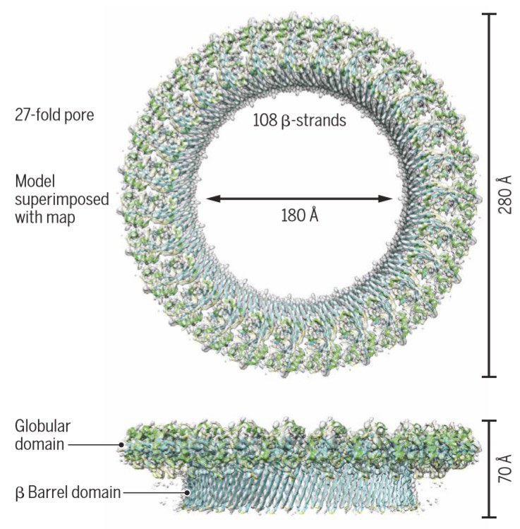
Fig 7.18 The pore, solved structurally: a 27-fold ring of 108 β-strands, inner diameter 180 Å, outer 280 Å, with a globular domain above and a β-barrel of about 70 Å crossing the membrane. Seen from the side below.منفذ، با ساختار حلشده: حلقهای ۲۷تایی از ۱۰۸ رشتهٔ بتا، قطر داخلی ۱۸۰ و بیرونی ۲۸۰ آنگستروم، با دومینی کروی در بالا و بشکهٔ بتای حدود ۷۰ آنگستروم که از غشا میگذرد. پایین، نمای جانبی.
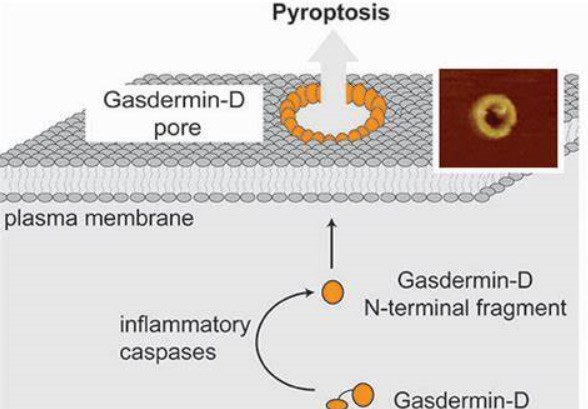
Fig 7.19 The mechanism in one picture: inflammatory caspases cleave gasdermin D, the N-terminal fragment inserts into the plasma membrane, and the gasdermin-D pore opens — with an atomic-force micrograph of a real pore inset. Arrow upwards: pyroptosis.سازوکار در یک تصویر: کاسپازهای التهابی گاسدرمین D را میبرند، قطعهٔ انتهای N در غشای پلاسمایی فرو میرود و منفذ گاسدرمین D باز میشود — با میکروگراف نیروی اتمی از یک منفذ واقعی در گوشه. پیکان رو به بالا: پیروپتوز.
Fig 7.20Feng Shao (邵峰), Beijing — identified gasdermin D as the substrate that executes pyroptosis.فنگ شائو، پکن — گاسدرمین D را بهعنوان بستری که پیروپتوز را اجرا میکند شناسایی کرد.Fig 7.21Vishva M. Dixit — whose group independently identified gasdermin D and much of the non-canonical pathway.ویشوا دیکسیت — گروهش مستقلاً گاسدرمین D و بخش عمدهٔ مسیر غیرکانونی را شناسایی کرد.Fig 7.22Hao Wu — structural biologist who solved the filament and pore architectures that make the polymerisation mechanism visible.هائو وو — زیستشناس ساختاری که معماری رشتهها و منفذها را حل کرد و سازوکار پلیمریزاسیون را دیدنی ساخت.
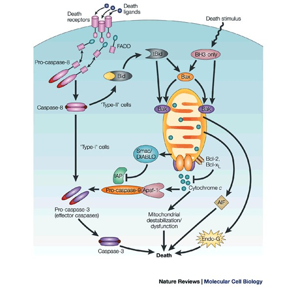
Fig 7.23 For contrast, the apoptotic caspases. Extrinsic: death ligands → death receptors → FADD → caspase-8. Intrinsic: a death stimulus → BH3-only proteins → Bax/Bak → mitochondrial cytochrome c → Apaf-1 → caspase-9. Both converge on caspase-3. None of these enzymes cleaves gasdermin D, and none releases IL-1β. Same protein family, opposite immunological meaning.برای مقایسه، کاسپازهای آپوپتوزی. برونزاد: لیگاندهای مرگ ← گیرندههای مرگ ← FADD ← کاسپاز ۸. درونزاد: محرک مرگ ← پروتئینهای تنها-BH3 ← Bax/Bak ← سیتوکروم c میتوکندریایی ← Apaf-1 ← کاسپاز ۹. هر دو به کاسپاز ۳ میرسند. هیچیک از این آنزیمها گاسدرمین D را نمیبرد و هیچیک IL-1β آزاد نمیکند. همان خانوادهٔ پروتئینی، معنای ایمنی متضاد.
7.7Pathogens Fight Backپاتوژنها مقابله میکنند
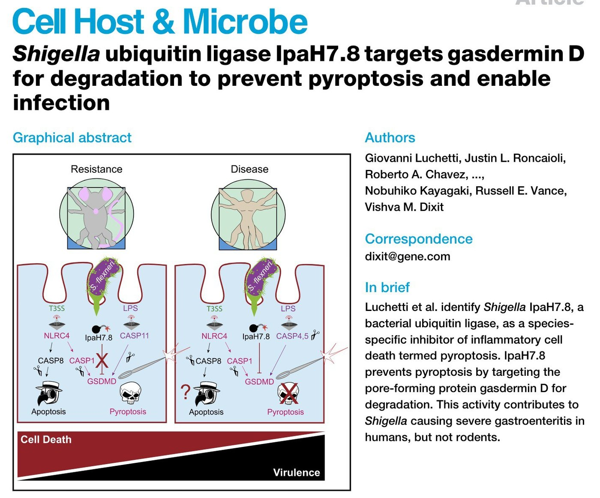
Fig 7.24Shigella injects IpaH7.8, a bacterial ubiquitin ligase, which tags gasdermin D for proteasomal destruction. No gasdermin, no pore, no pyroptosis — and the bacterium keeps the cell it is living in. The effect is species-specific: IpaH7.8 targets human gasdermin D but not the rodent protein, which contributes to Shigella causing severe gastroenteritis in humans but not in rodents.شیگلاIpaH7.8 را تزریق میکند، یک لیگاز یوبیکوئیتین باکتریایی که گاسدرمین D را برای نابودی در پروتئازوم برچسب میزند. نه گاسدرمینی، نه منفذی، نه پیروپتوزی — و باکتری سلولی را که در آن زندگی میکند نگه میدارد. اثرش گونهویژه است: IpaH7.8 گاسدرمین Dی انسانی را هدف میگیرد نه پروتئین جوندگان را، و همین در ایجاد گاستروانتریت شدید شیگلا در انسان و نه در جوندگان نقش دارد.
The pattern is the one you met at the end of Part 5. A host defence mechanism is confirmed as important by the fact that pathogens spend genes on disabling it. Poxviruses encode decoy cytokine receptors; Shigella encodes a ligase that destroys gasdermin D. If you want to know which parts of immunology matter, read the list of what microbes have evolved to switch off.الگو همان است که در پایان بخش ۵ دیدید. اهمیت یک سازوکار دفاعی میزبان با این واقعیت تأیید میشود که پاتوژنها ژن خرج ازکارانداختنش میکنند. پاکسویروسها گیرندهٔ دیکوی سایتوکاینی رمزگذاری میکنند؛ شیگلا لیگازی رمزگذاری میکند که گاسدرمین D را نابود میکند. اگر میخواهید بدانید کدام بخشهای ایمونولوژی اهمیت دارند، فهرست آنچه را میکروبها برای خاموشکردنش تکامل یافتهاند بخوانید.